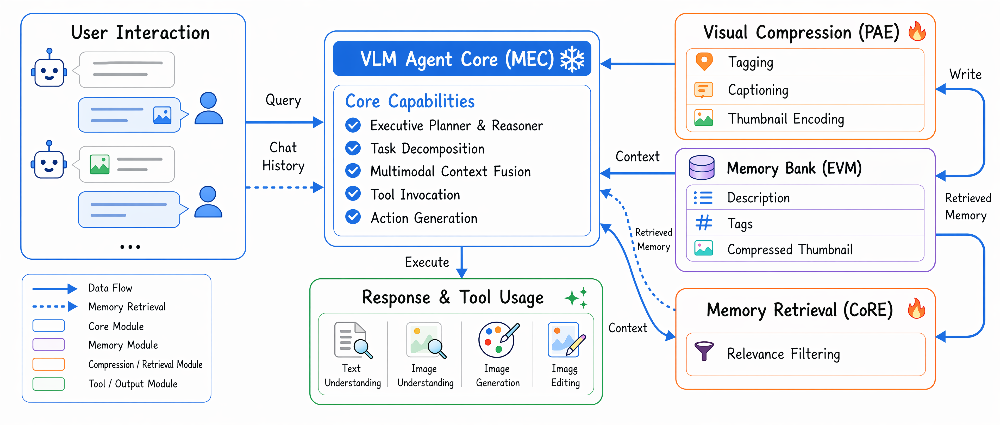
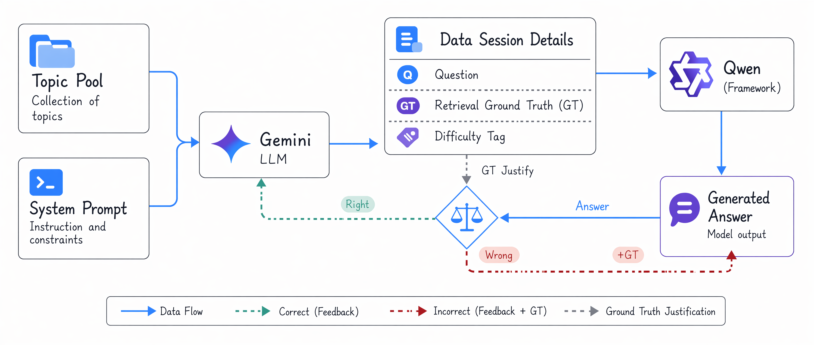
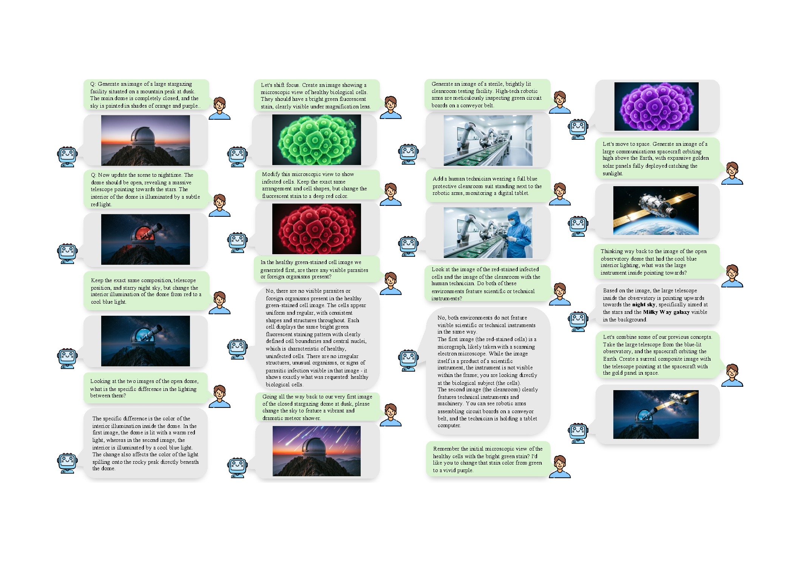
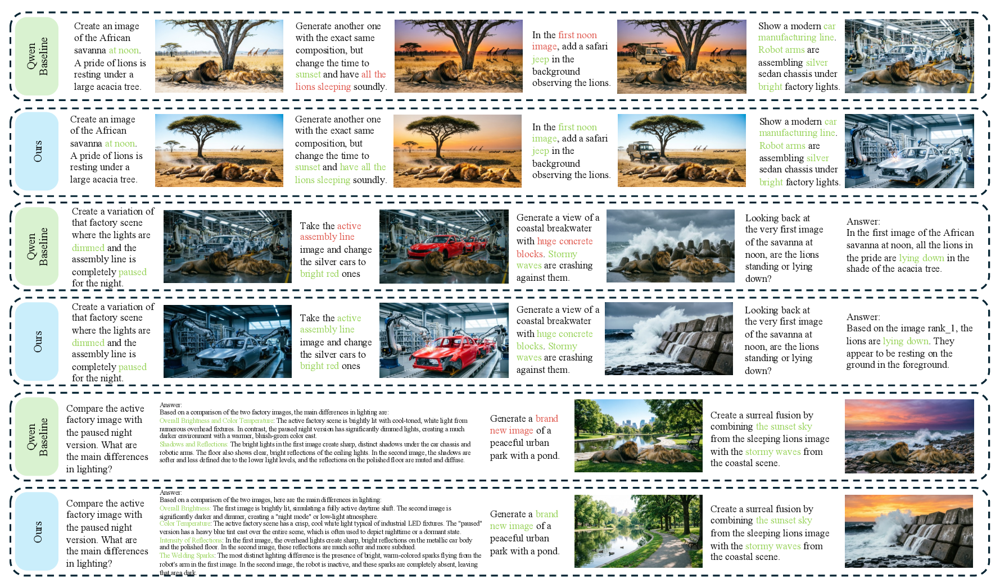
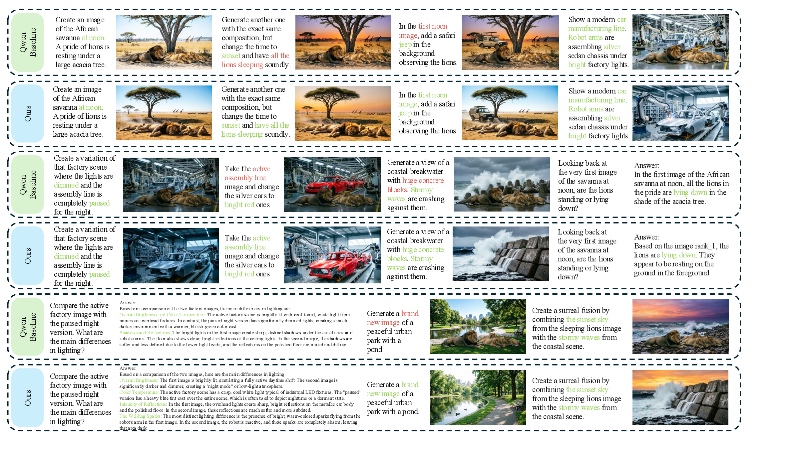

Long-horizon multimodal memory, retrieval, generation, and editing
Cognitive-structured Multimodal Agent
for Multimodal Understanding, Generation, and Editing
1Peking University 2WeChat Vision, Tencent Inc.
We introduce a memory-centric multimodal agent that externalizes visual history into Episodic Visual Memory, selectively retrieves relevant visual episodes, and plans understanding, generation, editing, and composition actions through a multimodal executive controller.
Demo gallery
Method
A cognitive structure for long-horizon multimodal interaction
Our agent externalizes visual history into an addressable memory, retrieves only the episodes relevant to the current turn, and lets a multimodal controller decide whether to understand, generate, edit, or compose. The pipeline below shows how these components fit together end‑to‑end.

Structured visual memory
Incoming and generated images are compressed into captions, tags, thumbnails, and metadata, allowing visual evidence to persist without repeatedly occupying the model context window.
Selective cross-turn retrieval
The Cognitive Retrieval Engine selects only the visual episodes relevant to the current user turn, improving grounding while reducing visual-token overhead.
Executive task control
The Multimodal Executive Controller infers whether a turn requires understanding, generation, editing, composition, or pure chat, then routes the task accordingly.
Training for memory use
A Unified Scenario Engine generates structured multi-turn dialogues with retrieval annotations, enabling SFT and RL optimization for memory construction and retrieval.
Benchmark
M2CA-Bench evaluates cross-turn visual recall
The Multi-turn Context Agent Benchmark (M2CA-Bench) is a held-out evaluation set of 100 sessions × 20 turns (2,000 turns) designed to stress-test long-horizon multimodal grounding. It is generated by our Unified Scenario Engine and stratified by difficulty so that memory construction, retrieval, and downstream generation/editing can be diagnosed independently.

Structured scenario representation
Each turn is annotated as
(ti, τi, Ri*, di, fi):
user input, task type, ground-truth retrieval set, difficulty, and challenge tags.
Topics span 8 domains (commercial, industrial, educational, public service, hospitality,
natural landscape, scientific, space) with four task modes per topic —
generate, edit, cross-reference-edit, understand.
Four difficulty strata
Turns are stratified by topic shift, temporal span, multi-image interaction, and ambiguity:
- easy — same-topic, short-span references
- medium — mid-range recall across turns
- hard — long temporal spans or topic shifts
- very_hard — multi-image comparison, fusion edits, ambiguous references
Hard-negative design
To block shortcut learning, M2CA-Bench injects two adversarial families: high-similarity confounders (near-duplicate images differing only in color, lighting, or material), and negative retrieval samples — semantic negatives that mention past images conversationally without needing them, and structural negatives that explicitly request a new generation.
Three evaluation subsets
Retrieval accuracy is reported on three cuts of increasing difficulty, aligned with typical long-horizon failure modes:
- All — all 2,000 turns
- Long — turns 11–20, testing extended memory
- Hard —
very_hardsubset within turns 11–20
Visual results
Long-horizon dialogue examples with generation, editing, and visual recall



Deployment
CMA-Harness extends the same cognitive structure to open-ended workflows
Persistent multimodal memory
Session memories, user preferences, thumbnails, image cards, and gallery assets remain addressable across turns.
Tool-augmented action space
Web search, image retrieval, generation, editing, composition, deterministic collage, and inspection tools expand MEC's decisions.
Interactive execution loop
Tool results are appended back into the dialogue state, enabling iterative search, retrieval, generation, editing, and final response synthesis.
Citation
BibTeX
@article{wang2026cognitive,
title = {Cognitive-structured Multimodal Agent for Multimodal Understanding, Generation, and Editing},
author = {Wang, Feng and Fu, Canmiao and Huang, Zhipeng and Li, Chen and LYU, Jing and Li, Ge},
journal = {arXiv preprint arXiv:2607.08497},
year = {2026},
eprint = {2607.08497},
archivePrefix = {arXiv},
primaryClass = {cs.CV}
}